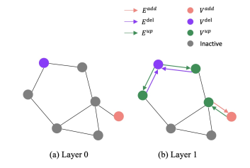
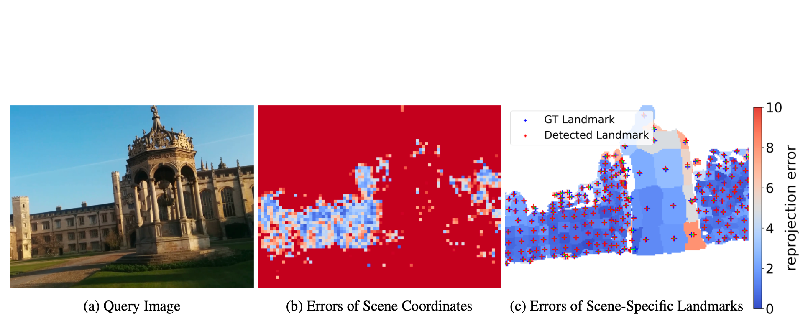
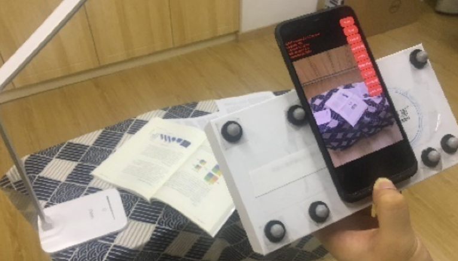
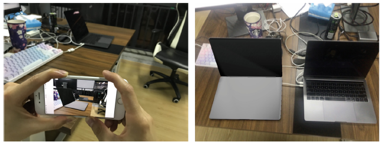

Publication
Your browser does not support the video tag.
Tri-MipRF: Tri-Mip Representation for Efficient Anti-Aliasing Neural Radiance Fields
ICCV 2023 (Oral)
Wenbo Hu, Yuling Wang, Lin Ma, Bangbang Yang , Lin Gao, Xiao Liu, Yuewen Ma
Paper
Project Page
Your browser does not support the video tag.
SINE: Semantic-driven Image-based NeRF Editing with Prior-guided Editing Field
CVPR 2023
Chong Bao*, Yinda Zhang*, Bangbang Yang* , Tianxing Fan, Zesong Yang, Hujun Bao, Guofeng Zhang, Zhaopeng Cui
Paper
Project Page
Code
Your browser does not support the video tag.
NeuMesh: Learning Disentangled Neural Mesh-based Implicit Field for Geometry and Texture Editing
ECCV 2022 (Oral)
Bangbang Yang* , Chong Bao*, Junyi Zeng, Hujun Bao, Yinda Zhang, Zhaopeng Cui, Guofeng Zhang
Paper
Project Page
Code
Your browser does not support the video tag.
Neural Rendering in a Room: Amodal 3D Understanding and Free-Viewpoint Rendering for the Closed Scene Composed of Pre-Captured Objects
ACM Transactions on Graphics (SIGGRAPH 2022)
Bangbang Yang , Yinda Zhang, Yijin Li, Zhaopeng Cui, Sean Fanello, Hujun Bao, Guofeng Zhang
Paper
Project Page
Code
Your browser does not support the video tag.
Factorized and Controllable Neural Re-Rendering of Outdoor Scene for Photo Extrapolation
ACM MM 2022 (Oral)
Boming Zhao*, Bangbang Yang* , Zhenyang Li, Zuoyue Li, Guofeng Zhang, Jiashu Zhao, Dawei Yin, Zhaopeng Cui, Hujun Bao
Paper
Project Page
Code
Your browser does not support the video tag.
Learning Object-Compositional Neural Radiance Field for Editable Scene Rendering
ICCV 2021
Bangbang Yang , Yinda Zhang, Yinghao Xu, Yijin Li, Han Zhou, Hujun Bao, Guofeng Zhang, Zhaopeng Cui
Paper
Project Page
Code
Your browser does not support the video tag.
LatentHuman: Shape-and-Pose Disentangled Latent Representation for Human Bodies
3DV 2021
Sandro Lombardi*, Bangbang Yang* , Tianxing Fan, Hujun Bao, Guofeng Zhang, Marc Pollefeys, Zhaopeng Cui
Paper
Project Page

Graph-based Asynchronous Event Processing for Rapid Object Recognition
ICCV 2021
Yijin Li, Han Zhou, Bangbang Yang , Ye Zhang, Zhaopeng Cui, Hujun Bao, Guofeng Zhang
Paper

VS-Net: Voting with Segmentation for Visual Localization
CVPR 2021
Zhaoyang Huang, Han Zhou, Yijin Li, Bangbang Yang , Yan Xu,
Xiaowei Zhou, Hujun Bao, Guofeng Zhang, Hongsheng Li
Paper
Project Page
Code

Survey and Evaluation of Monocular Visual-Inertial SLAM Algorithms for Augmented Reality
VR-IH 2019
Jinyu Li, Bangbang Yang , Danpeng Chen, Nan Wang, Guofeng Zhang, Hujun Bao
Paper
Project Page
Code

Robust and Efficient Visual-Inertial Odometry with Multi-plane Priors
PRCV 2019
Jinyu Li, Bangbang Yang , Kai Huang, Guofeng Zhang, and Hujun Bao
Paper
Video1
Video2
Code
Experience
2017~Current: Ph.D in Computer Science at State Key Lab of CAD&CG of Zhejiang University.
2018~2019: Research intern at Sensetime, Hangzhou.
2013~2017: B.Eng. in Electronic Engineering at Hefei University of Technology.
Selected Awards
Second Prize in China Graduate AI Innovation Competition: 2021
Outstanding Intern at Sensetime: 2019
National Scholarship: 2015, 2016 (Ranked 1/131)
Second Prize in National Undergraduate Electronics Design Contest: 2016